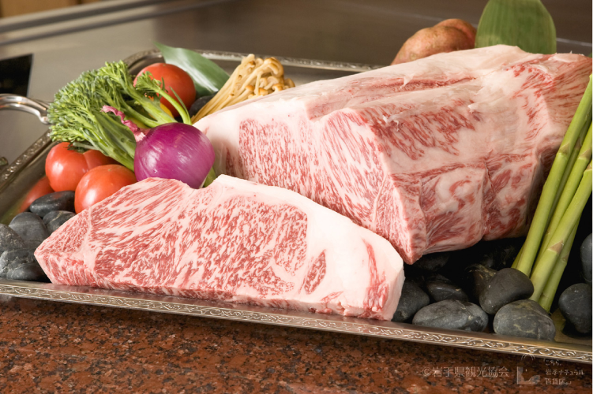
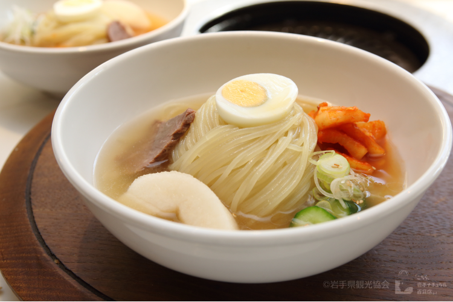
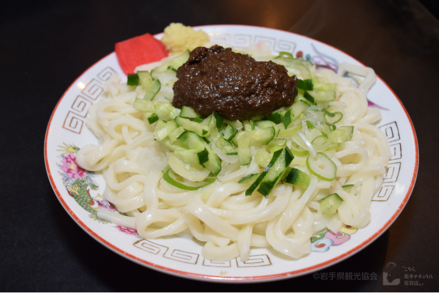
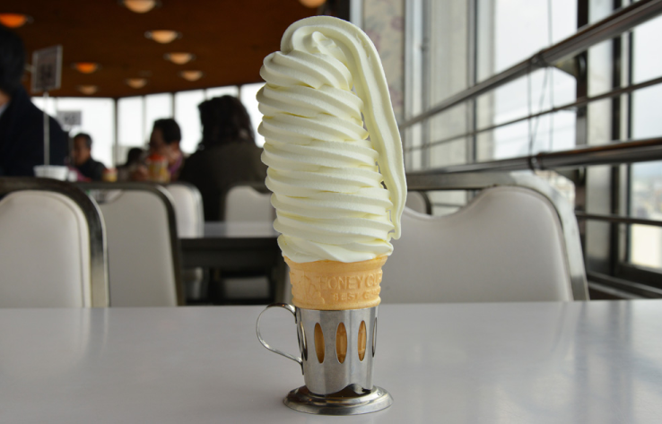

前沢牛

前沢牛は、岩手県奥州市前沢で肥育された黒毛和種の和牛が、一定の規格を満たした場合に呼称を許されるブランド牛肉。
前沢牛の発祥のお店はこちら盛岡冷麺

盛岡冷麺の発祥のお店はこちら盛岡冷麺は、岩手県盛岡市の名物麺料理。わんこそば、じゃじゃ麺と並んで「盛岡三大麺」と称されている。主に焼き肉店での定番として提供される。
盛岡じゃじゃめん

盛岡じゃじゃ麺の発祥のお店はこちら盛岡じゃじゃ麺は岩手県盛岡市の郷土料理。わんこそば、冷麺と並んで「盛岡三大麺」または「岩手の三大麺」と称される麺料理の一つである。
わんこそば

そばを椀に盛って差し上げたところから「わんこそば」と称されるようになった。大食いのイメージがあるが、元々はお客様にたくさん召し上がっていただきたいというおもてなしの食文化である。
１０段巻きソフトクリーム

マルカンビル大食堂のサイトこちら岩手県花巻市の「マルカンビル大食堂」にある25cm以上の高さがあるソフトクリームです。1973年から設立されている建物で昭和のレトロな雰囲気もそのまま残っており、とても人気です。